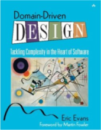
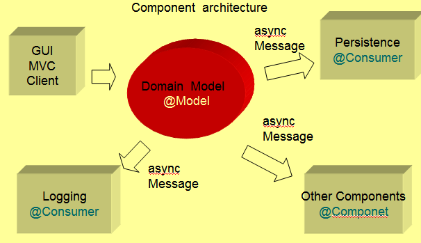
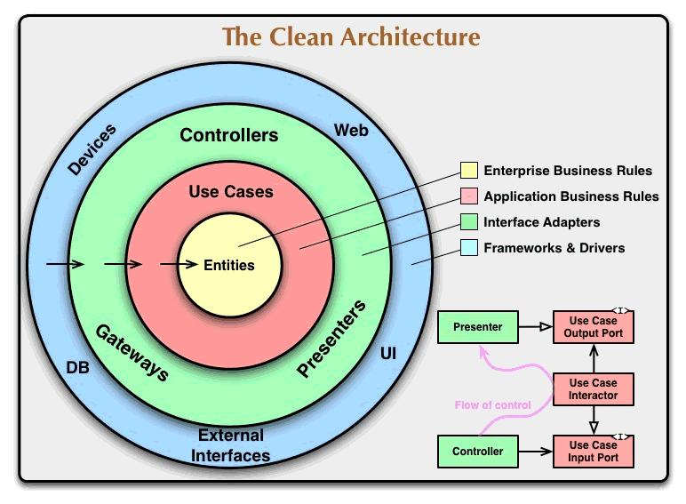
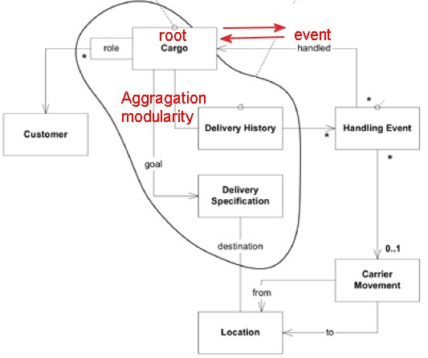
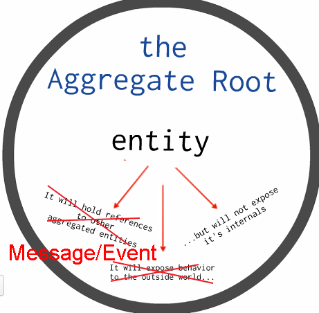
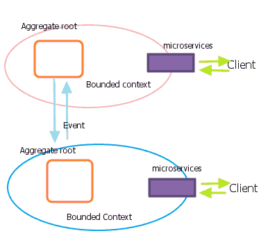
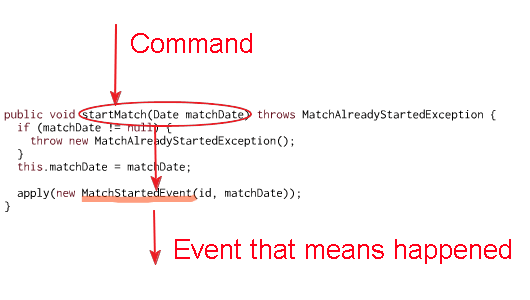
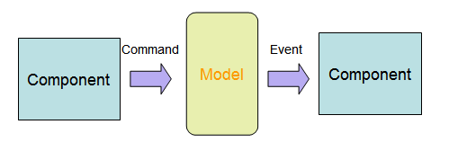

IF no DDD:chinese Book : [here](https://u.jd.com/IlohUy)Jdon Framework : a CQRS/DDD/ES FrameworkJdonFramework is a DDD's Domain Events framework that supports pub-sub asynchronous programming model. No any message middleware like Apache Kafka or RabbitMQ, you can directly command domain model doing something, and listen any domain events from domain model. using JdonFramework, you can build your Domain Driven Design + CQRS + EventSourcing applications with asynchronous concurrency and higher throughput . jdonframework help you implement a clean and hexagonal architecture! Jdon introduces reactive and event-driven into domain, a aggregate root entity's state can be modified by Node.js style event-driven way,and it can concurrently publish reactive events to its subscribers. JdonFramework's event engine is from Disruptor that be recommended by LMAX Architecture wriiten by Martin Fowler. (nonblocking and asynchronous) Feature of Jdonframework: combining DCI with DDD aggregate and Domain Events.
Domain-driven design (DDD) Domain-driven design (DDD) is an approach to developing software for complex needs by deeply connecting the implementation to an evolving model of the core business concepts. details.  Eric Evans on How Technology Influences DDD(2012) DDD's servral concepts are the Heart and Soul of OOP: Entities and Identity, Value Objects
CQRS Command-query Responsibility Segregation At its heart is a simple notion that you can use a different model to update information than the model you use to read information. details.
Domain Events Captures the memory of something interesting which affects the domain. details, see How to create fully encapsulated Domain Models 
BPM/workflow + Jdon_command + microservices + Aggregates+ Jdon_domainevents + distributed transaction:
Clean architecture/Hexagonal architecture

More articles..
With JdonFramework you can easily develope a Event Sourcing and CQRS system. in CQRS, by disruptor Jdon can send domain events to #rabbitmqand #zeromq - #distributed. Object Oriented Programming: A Critical Approach say: OO is really about message passing: “The message-sending metaphor provides modularity by decoupling the intent of a message (embodied in its name) from the method used by the recipient to carry out the intent. Structural information is similarly protected because all access to the internal state of an object is through this same message interface.” by using jdon, a aggregate root can act as a mailbox that is a asynchronous and non-blocking event-sending and event-recipient metaphor..see below picture, more details in : Robot sample  Event is a better interactive way for aggregate root with each other, instead of directly exposing behavior and hold references to others. and it can better protect root entity's internal state not expose. and can safely modify root's state in non-blocking way.  Domain Events(Event Sourcing) for Evans DDD : Real domain logic is in the Domain Model, Outside the domain are these adapters, that listen to messages sent by the domain. For instance, the domain could ‘broadcast’ a message(Domain Events) that a new domain object has been created. An appropriate listener receives this message and calls a method on a persistence service. This service knows how to store the object in the database.
Microservices Microservice = bounded context + independent deploy and run. 
JdonFramework PPT
Key Features:
Getting StartedIn Jdon there are two kinds of model: Component and Model. a Component class is annotated with @Component, and a Model class is annotated with @Model. When a Model is referenced by Component, it is a aggregate root, if it is referencedby another model, it is not a aggregate root, maybe normal Entity or Value Object. Model instances live in in-memory cache, and Component instances live in the container that its lifcycle is equal to application scope. Component can be use to implement DDD's service or other application manager, such as repository or Email sender.. Service (annotated with @Service) is same as Component, their difference is their usage, Service class services for the client, be equals to SOA service. Jdon provide four kinds of asynchronous concurrency communication(Producer/Consumer) with these two models. 1. Component -----> model 2. model ------->Component 3. Compponent ------> Component 4. model------> model when a Component/Service sends messages to a Domain Model(aggregate root), in CQRS we call the message is a command, and whe a domain model send message to a Component, we call it reactive a event. see below:  a command actions the behavior(startMatch) of a aggregate root(domain model), and a event happend in this behavior, the event will be sent to another aggregate root or a Component that maybe save it to repository.  details here JiveJdonJivejdon is a Wordpress-like Blog/Forum application with DDD + DomainEvents/Event Soucing/CQRS + clean architecture/Hexagonalarchitecture using jdonframework!BlogDDD CQRS EventSourcing example source: football Match DDD DCI and DomainEvents example how to enhance Jdon framework to DCI framework ? how to easily develop a non-blocking concurrent application ?
HistoryJdon framework was submitted to sf.net in Dec 2004. and release a stable and mature version in JUN 2005. until Jdon Framework 6.2 released in 2009, JF is truly stableDDD framework for java. Contact@banqjdon |